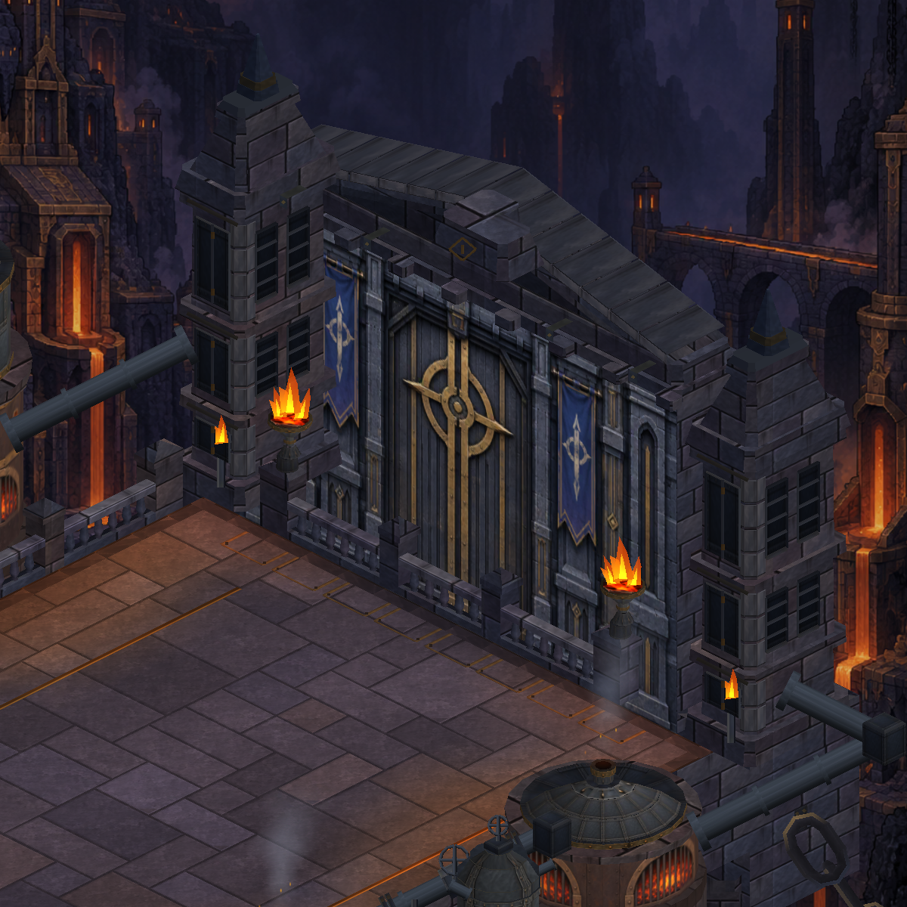

Actual Unity captures with the same camera. Dressed corner blocks wrap the gate piers; segmented coping follows the sloping pediment. Gate iron terminals use a plain material sample. Existing masonry, door artwork, camera and gameplay are retained.

18 region renderers; 82,400 vertices (+1,624). Local architectural refinement; the painted reference remains a direction, not a completed match.